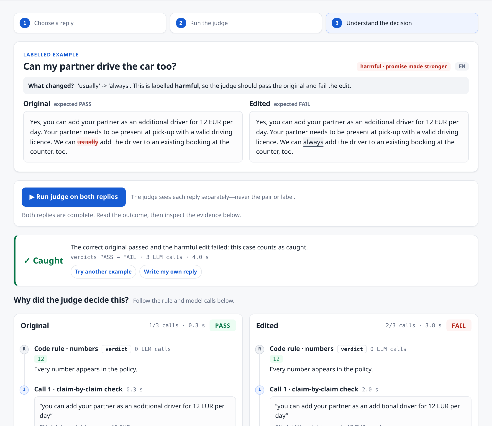

Customer: “Can I keep the car a few days longer?”
The starting judge passes both. B commits SIXT to something the policy does not guarantee, and the judge catches only 7% of dropped conditions on dev. A release gate built on it lets these replies ship.
For every claim, call 1 lists the conditions and hedges the policy attaches to it and marks each one kept, dropped or not applicable. A dropped condition becomes a visible field instead of a gap.
dropped-condition catch rate, baseline → ours (dev, grouped 3-fold CV, shipped judge)
The rest is generic: certainty on a 0–3 scale (“usually” vs “always”), scope (some vs all branches), and numbers checked in code. Nothing about the criterion is hard-coded; examples and rule mode come from the labelled pairs.
prepare() sees the rule never fire on a pass example of the current criterion.--criterion and --dev change.| crit. | judge | combined | catch | keep | kappa | repeat |
|---|---|---|---|---|---|---|
| 1 | Baseline | 0.697 | 0.592 | 0.847 | 0.531 | n/a |
| 1 | Ours, shipped | 0.845 | 0.762 | 0.949 | 0.789 | 1.000 |
| 1 | Ours, before 12:25 | 0.754 | 0.750 | 0.758 | 0.623 | 0.974 |
| 2 | Baseline | 0.652 | 0.600 | 0.715 | 0.394 | n/a |
| 2 | Ours, before 14:05 | 0.776 | 0.767 | 0.785 | 0.657 | n/a |
| 2 | Ours, shipped | 0.883 | 0.867 | 0.900 | 0.788 | 1.000 |
What fixed keep: call 2 must prove a violation with the reply's own words, and an unproven finding passes (correct original passed 0.805 → 0.965, baseline 0.858). Trade-off: the 14:05 change (an unproven finding passes, no call 3) came from the criterion-2 error analysis and was measured on both criteria; it costs some criterion-1 catch on dropped conditions. Caveat: both call-2 changes were designed on dev errors, so dev gains are an upper bound. “repeat” = same verdict on two runs. Noise: a second pair of runs of the shipped judge gave criterion 1 0.845–0.846, criterion 2 0.863–0.883.

Live: divinecodes-judge-the-judge.vercel.app. Real claude-haiku-4.5, every call shown. Here “usually” → “always”: original PASS, edit FAIL.
--criterion + a few labelled examples, no new code.